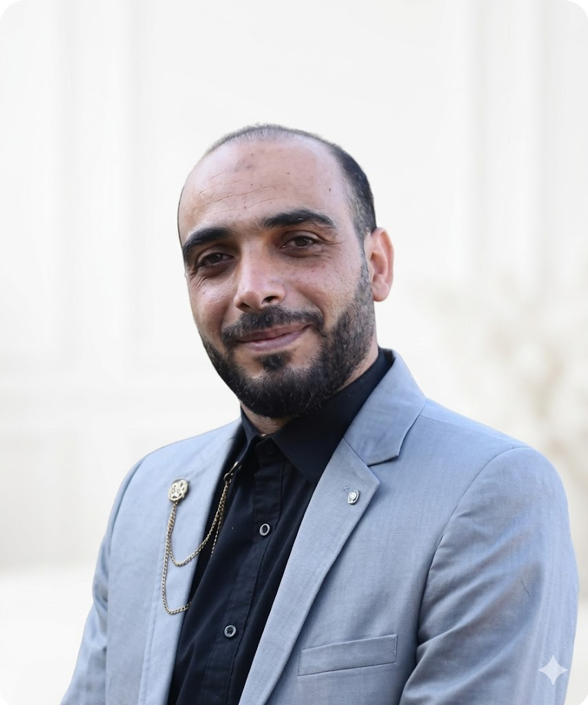

Architect & Site Engineer
Damascus University · 10+ Years of Experience
Architecture is not just design —
it is a civilization written in stone.

Who I Am
I am Anas Mahmoud Naser, an architect and site engineer based in As-Suwayda, Syria, with a Bachelor of Architecture from Damascus University (2014). Over more than a decade, I have dedicated my practice to the spaces where people truly live — infrastructure that serves, buildings that endure, and communities that flourish.
"I build spaces that serve communities, preserve heritage, and inspire the future."
My career spans field supervision of water and sewage systems, the execution of residential complexes, and the design of community facilities — always with rigorous attention to quality, safety, and technical precision. I began in Najran village, contributing to tourism and heritage development, before settling in As-Suwayda City to continue broader engineering and civic engagement.
Beyond construction, I have served as a volunteer mathematics and physics instructor with the Syrian Arab Red Crescent (2017–2023), a commitment that reflects my belief that architects bear responsibility not only for the buildings they raise, but for the people who inhabit them.
Career Path
Graduated from Damascus University, Faculty of Architecture — the foundation of a lifelong practice.
Contributed to tourism and heritage development initiatives, working to protect architectural identity and stimulate the local economy.
Led supervision of major infrastructure projects: sewage networks, water systems, and residential complexes across the governorate.
Six years of volunteer teaching in mathematics and physics — a parallel commitment to community service alongside engineering work.
Continuing architectural practice while expanding into research, publication, and international engagement.
Selected Works
Visual Stories
12-building residential complex, As-Suwayda
Add YouTube link to activate
Design to completion documentation
Add YouTube link to activate
Tourism development and structural identity
Add YouTube link to activate
Academic Journal
Professional Profile
TECHNICAL SKILLS
PDF · Available in English
Get In Touch
Whether you have a project, a question, or simply want to connect — I'd love to hear from you.